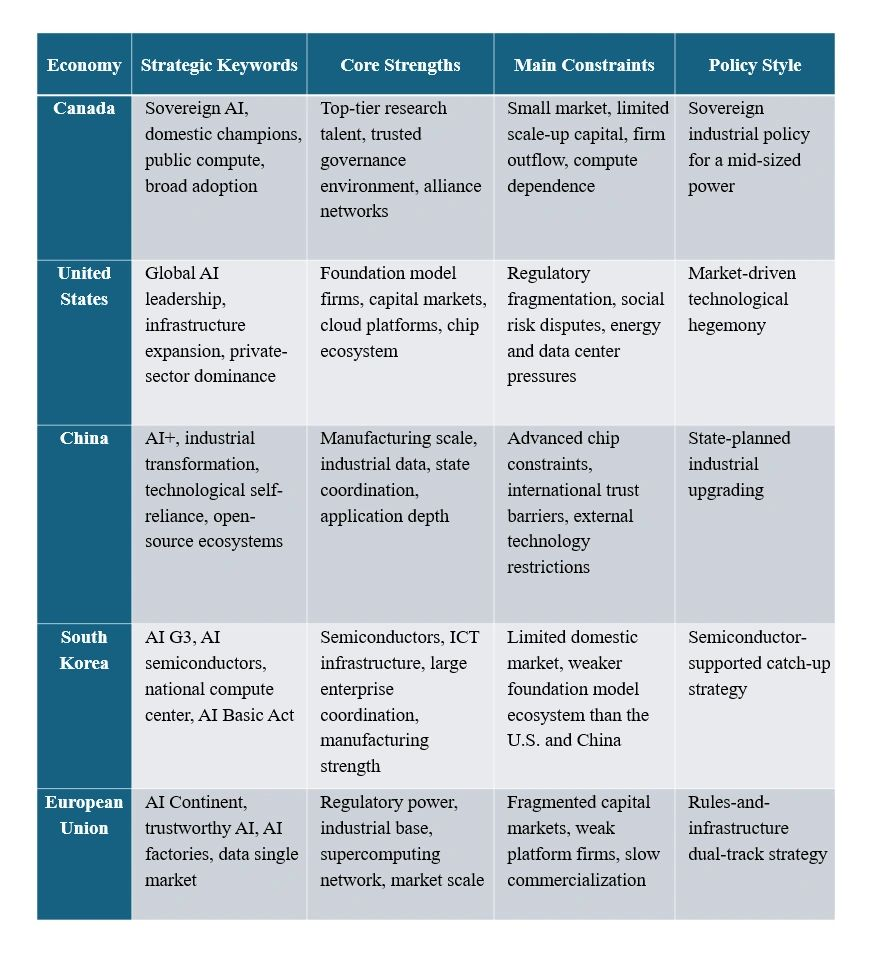

Canada’s “AI for All” Strategy:

From Research Strength to Sovereign AI Industrial Policy
Author: Dr. Shaoyuan Wu
ORCID: https://orcid.org/0009-0008-0660-8232
Affiliation: Global AI Governance and Policy Research Center, EPINOVA LLC
Date: June 5, 2026
Core Judgment
Canada’s newly announced “AI for All” national strategy marks an important shift in the country’s artificial intelligence policy. Canada is moving from a model centered on research excellence, talent development, and responsible AI governance toward a more comprehensive industrial strategy built around capital, compute, public procurement, domestic firm growth, and technological sovereignty.
The central issue is not simply whether Canada can “develop AI.” The deeper question is whether Canada can convert its long-standing research advantages into domestic industrial power.
Canada has never lacked AI talent. Montreal, Toronto, and Edmonton have long been among the world’s leading centers for machine learning and deep learning research. Institutions such as Mila, the Vector Institute, and Amii have helped make Canada one of the intellectual birthplaces of modern AI. Yet Canada’s structural weakness has been equally clear: promising startups often relocate to the United States, Canadian intellectual property is frequently absorbed by foreign capital, domestic firms struggle to scale, and compute and cloud infrastructure remain heavily dependent on external providers.
The “AI for All” strategy is therefore best understood as an effort to transform AI from a research asset into an economic, industrial, and strategic national asset.
1. Four Pillars of Canada’s AI Strategy
1.1 State Capital for Domestic AI Champions
Canada’s plan to establish a CAD 500 million Technology Growth Fund, alongside the use of sovereign investment mechanisms to support promising domestic technology firms, signals a major policy adjustment.
The government has recognized that research funding alone cannot solve the scale-up problem. In the current phase of AI competition, model development, compute acquisition, data engineering, global commercialization, and compliance infrastructure all require large amounts of long-term capital.
For a mid-sized advanced economy such as Canada, the greatest risk is not the absence of AI companies. The greater risk is that Canada produces innovative AI firms that cannot grow domestically and are eventually pulled into the orbit of larger foreign markets, especially the United States.
Government-backed growth capital is therefore intended to provide strategic patience. It gives Canadian AI companies more room to scale at home before they face the pressure to relocate, sell, or become dependent on foreign platforms.
1.2 Sovereign Compute and Public AI Infrastructure
Canada’s strategy also emphasizes the creation of a world-leading public AI supercomputer and expanded domestic compute and cloud infrastructure.
This is a crucial point. Compute is no longer just a technical input. It has become a strategic infrastructure layer. In the age of foundation models and generative AI, access to compute determines who can train models, who can experiment at scale, who can protect sensitive data, and who can remain technologically autonomous.
If Canadian researchers and firms rely too heavily on foreign cloud providers and external compute ecosystems, Canada may retain talent but lose control over the core infrastructure of AI development.
Sovereign compute therefore serves two purposes. It lowers barriers for domestic firms and research institutions, and it reduces external dependence in a field increasingly tied to economic security and national resilience.
1.3 Public Procurement as an Early Market
Another important feature of the strategy is the use of the federal government as an early customer for Canadian AI firms.
This is not a minor procurement detail. For emerging AI companies, early adoption, revenue, trust, validation, and deployment experience can be as important as technical capability. Government procurement can create initial demand in areas such as health care, public administration, transportation, energy, infrastructure, and regulatory services.
If implemented effectively, public procurement will function not only as a spending mechanism but also as an industrial policy tool. It can help Canadian firms prove their technologies, build reference clients, and expand into international markets.
1.4 Trust, Safety, and Broad Adoption
The title “AI for All” reflects another major objective: broad social adoption. Canada’s strategy highlights AI literacy, privacy protection, safeguards against deepfakes, prevention of algorithmic harms, and AI safety research.
This shows that Canada is not simply adopting a deregulated innovation-first model. Instead, it is trying to combine industrial competitiveness with public trust.
The underlying logic is clear. If AI is controlled only by a small number of large platforms, both the economic benefits and the social risks will become concentrated. But if citizens, firms, researchers, and public institutions can use AI safely and confidently, AI can become a broad-based productivity tool rather than a narrow platform monopoly.
2. Comparative Perspective: Canada, the United States, China, South Korea, and the European Union
Canada’s strategy is part of a broader global shift. The first phase of AI competition was largely about models, papers, talent, benchmarks, and ethical principles. The second phase is about capital, compute, data, procurement, industrial conversion, and sovereign capability.
Table 1. National AI Strategy Comparison Across Five Major Policy Models
2.1 The United States: Platform-Led AI Hegemony
The United States remains the central power in global AI. Its strength lies in the concentration of leading AI companies, cloud platforms, semiconductor firms, venture capital, and developer ecosystems.
Unlike Canada, the United States does not primarily need to prevent its AI firms from leaving. Its challenge is different: how to govern AI power that is already deeply concentrated inside a small number of domestic technology platforms.
The U.S. model is not based mainly on direct state ownership. Instead, it relies on private capital, federal procurement, export controls, infrastructure expansion, energy policy, defense demand, and international technology alliances.
The American model can be described as platform-led AI hegemony. The state does not usually build national champions directly; rather, it protects and enables firms that already dominate global AI infrastructure.
2.2 China: AI+ as Systemic Industrial Transformation
China’s AI strategy is more closely linked to industrial upgrading. The emphasis on “AI+” reflects the goal of embedding AI into manufacturing, logistics, health care, education, agriculture, energy, urban governance, scientific research, and public administration.
China’s advantage lies in its large application market, deep manufacturing ecosystem, industrial data, and capacity for policy coordination. AI is not treated as a standalone digital sector, but as a general-purpose engine for economic restructuring and new productive capacity.
Compared with Canada, China’s central problem is not firm outflow. Its main challenge is external technological restriction, especially in advanced chips, semiconductor equipment, and parts of the foundational software ecosystem.
China’s model can be described as system-level AI industrial upgrading. AI is integrated into the transformation of the broader economy rather than treated as a narrow technology sector.
2.3 South Korea: AI G3 and the Semiconductor Link
South Korea’s objective is highly explicit: to become one of the world’s top three AI powers, or an “AI G3” country.
Its strategy connects AI development with semiconductors, national compute infrastructure, large corporate groups, and legal governance. South Korea’s strengths include Samsung, SK hynix, Naver, Kakao, SK Telecom, advanced memory chips, digital infrastructure, and manufacturing capacity.
Compared with Canada, South Korea has a stronger hardware and industrial base, while Canada has stronger AI research depth and a more trusted governance profile. South Korea’s model is more execution-oriented and industry-linked.
Its approach can be described as a semiconductor-supported AI catch-up strategy. By combining chips, compute, enterprise coordination, and national planning, South Korea aims to move from strong ICT power to leading AI power.
2.4 The European Union: From Rule-Maker to AI Infrastructure Builder
The European Union has long been associated with AI regulation, especially through the AI Act and its risk-based approach to trustworthy AI. However, the EU’s recent AI Continent agenda shows that Europe understands regulation alone is not enough.
Europe is now trying to build AI factories, AI gigafactories, data spaces, high-quality datasets, supercomputing capacity, AI skills programs, and industrial AI applications.
Compared with Canada, the EU has a larger market, stronger regulatory power, and greater financial capacity. But it also faces higher coordination costs among member states, fragmented capital markets, and weaker global platform companies.
The European model can be described as a rules-and-infrastructure dual-track strategy. Europe wants to maintain global leadership in trustworthy AI regulation while also catching up in compute, commercialization, and industrial deployment.
3. Canada’s Distinct Position
Canada is not the United States, China, South Korea, or the European Union. It does not have America’s platform scale, China’s industrial mobilization capacity, South Korea’s semiconductor conglomerates, or the EU’s market size.
That means Canada must follow a more selective strategy. It needs to use limited capital to support high-potential firms, use public compute to lower innovation barriers, use government procurement to create early demand, use trusted governance as a global advantage, and use alliance networks to expand market access.
Canada’s strongest opportunities are likely to emerge in four areas.
First, trustworthy AI for public-sector and regulated environments. Canada can build leadership in health care, education, public services, privacy-sensitive applications, and government AI governance.
Second, sector-specific AI. Canada has strong foundations in energy, mining, agriculture, life sciences, transportation, climate technology, and natural resources. These sectors are well suited to vertical AI applications.
Third, AI safety and evaluation tools. Canada’s research tradition and governance reputation could support AI testing, risk assessment, compliance infrastructure, and trustworthy deployment services.
Fourth, alliance-based AI intermediation. Canada can become a trusted AI bridge among the United States, Europe, and democratic partners in the Indo-Pacific, rather than simply becoming an extension of U.S. platform power.
4. Strategic Risks
The success of Canada’s strategy will depend on four unresolved questions.
First, whether CAD 500 million is enough. As a policy signal, it is meaningful. As a stand-alone financing instrument for global AI champions, it is limited. Its real value will depend on whether it can mobilize pension funds, sovereign capital, private investors, and public procurement.
Second, whether government procurement can move fast enough. If procurement remains slow, risk-averse, and fragmented, domestic AI firms will not gain the early market validation they need.
Third, whether sovereign compute becomes usable compute. Building a public AI supercomputer is only the first step. The key issue is whether firms and researchers can access it at reasonable cost, with efficient interfaces, adequate technical support, and predictable availability.
Fourth, whether Canada can break the pattern of being talent-rich but firm-poor. If Canadian AI talent continues to be absorbed by U.S. platforms, Canada may remain a research and talent supplier rather than an AI industrial power.
Conclusion
Canada’s “AI for All” strategy reflects a broader transformation in global AI competition. AI is no longer merely a technology race. It is now a contest over national industrial capacity, capital formation, compute infrastructure, data governance, public procurement, and strategic autonomy.
The United States relies on platform dominance and capital markets. China uses AI+ to drive system-wide industrial upgrading. South Korea connects AI to semiconductors, national compute, and corporate execution. The European Union combines trustworthy AI regulation with new infrastructure investment. Canada is attempting to build a distinct middle-power model: sovereign AI through domestic champions, public compute, government procurement, trusted governance, and broad social adoption.
The key question is whether Canada can convert research excellence into domestic firms, controllable infrastructure, public-sector demand, and global competitiveness.
If it succeeds, Canada will no longer be merely a source of AI talent. It could become one of the central nodes in a trusted global AI ecosystem.
Share this post: